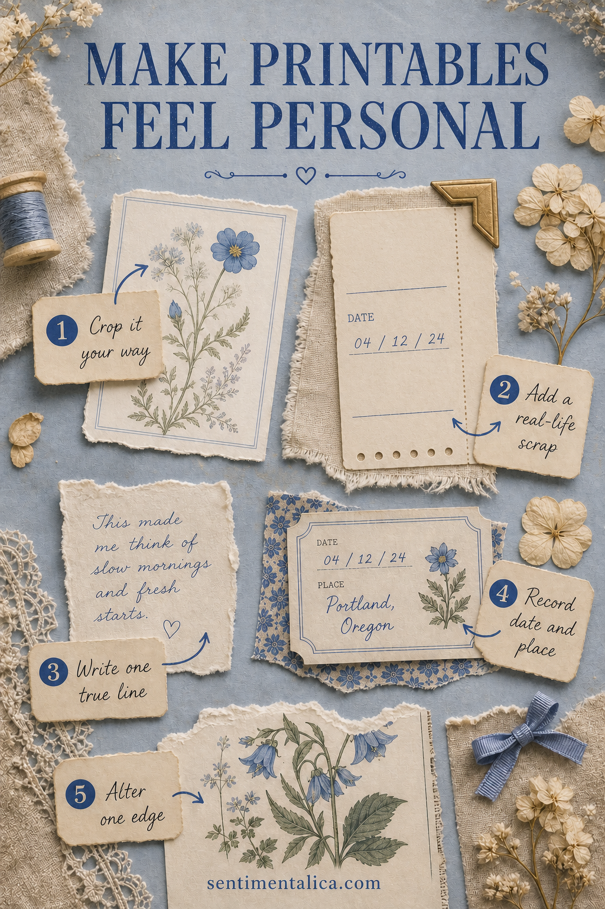
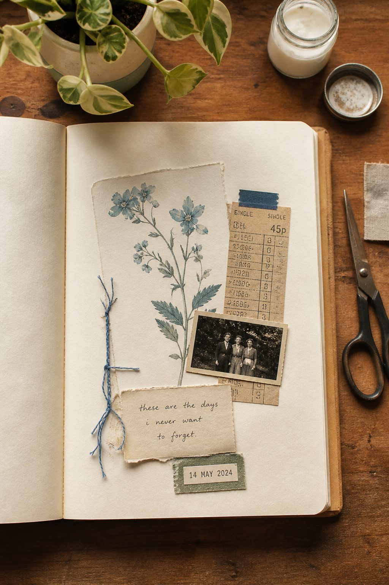
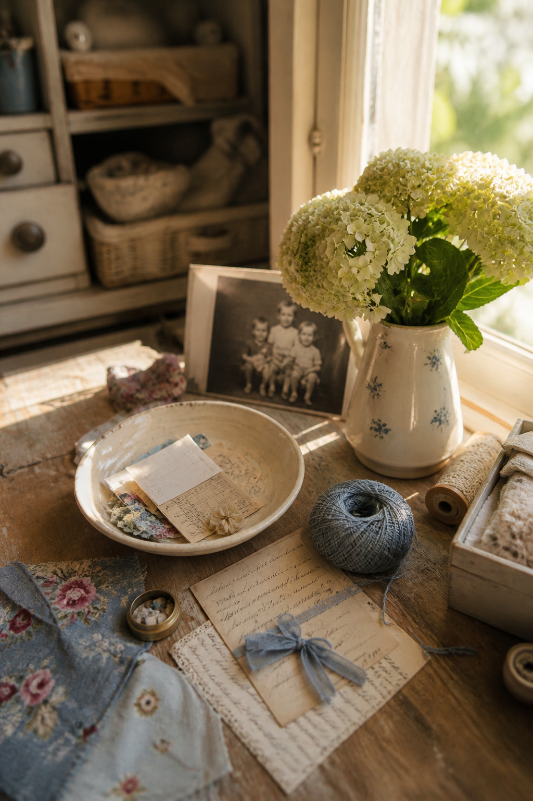

Printable pictures can give a junk journal instant atmosphere, but atmosphere is not the same as memory. A page may be beautifully coordinated and still feel as though it belongs to anyone. The answer is not to hide the printable. Let it create the setting, then add small pieces of evidence that only you could have collected.

Crop it your way
The original picture is only one possible composition. Cut away part of a border, isolate one flower, or let a branch disappear off the edge of the page. A personal crop shows what caught your attention. It also prevents the printable from behaving like a complete poster that leaves no room for your life.
Add one real-life scrap
Place something from the day beside the printed image: a transit ticket, shop label, envelope corner, tea tag, packaging strip, or piece of thread. It does not need to match perfectly. The small tension between polished art and ordinary paper is often what makes a junk journal feel lived in.
Write one true line
You do not need a diary entry. Write the sentence that could not have come with the printable: “The light was blue when I walked home,” or “I kept this because she laughed.” Handwriting changes the page immediately because it records a specific voice, pressure, and moment.
Record a date and place
A tiny date label can carry more meaning than another decoration. Add the town, room, street, season, or even “kitchen table after midnight.” Place turns an attractive image into scenery for a real memory. Years later, that modest label may be the detail that brings the whole page back.
Alter one edge
Tear, fold, stitch, sand, ink, or tuck one part of the printed piece. You do not need to distress everything. One changed edge is enough to show that the image passed through your hands. It also helps the piece meet the surrounding scraps instead of sitting above them like a separate layer.

Let the printable be scenery, not proof
A flower can establish softness. A cottage can suggest home. A map can make the page feel exploratory. But the printable is not the evidence that the day happened. Your receipt, handwriting, photograph, pressed leaf, or remembered phrase provides that. When the two jobs are separate, the page becomes both beautiful and believable.
Try the five-layer method with a simple sequence:
- Choose one picture for the mood.
- Crop it before choosing the other pieces.
- Add one scrap from real life.
- Write one sentence and one date.
- Change one edge, then stop.

Practise with a picture you are not afraid to change
The 100 free floral pictures are useful for this experiment because you can print a flower again if the first crop does not work. Choose one image, cut it more boldly than usual, and pair it with something from today. The goal is not to protect the picture. The goal is to let it become part of a page no one else could make.
Before you finish, cover the printed image with your hand for a moment. Does the remaining page still contain a trace of your day? Then uncover it. Does the picture give that evidence a world to live in? If both answers are yes, the printable is doing exactly the right amount of work.
Find more practical page-building ideas in the Sentimentalica journal archive.